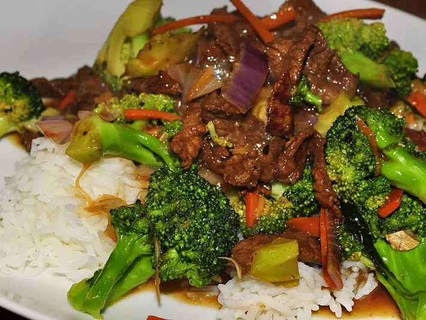

Фото: jeffreyw, CC BY 2.0
.jpg){kind=link}
Говядина с брокколи
Тонкие ломтики говядины с брокколи в соево-чесночном соусе
35 мин3 порц.466 ккал на порциюБ 34 · Ж 29 · У 20Азиатская кухня
Продукты на 3 порц.
- Говядина450 г
- Брокколи1 кочан
- Соевый соус4 ст. л.
- Крахмал1 ст. л.
- Сахар2 ч. л.
- Чеснок3 зуб.
- Имбирь10 г
- Вода0,5 стак.
- Растительное масло2 ст. л.
- Кунжут по желанию1 ч. л.
Как готовить
- Говядину слегка подморозьте 20 минут и нарежьте поперёк волокон тонкими ломтиками 3-4 мм.
- Смешайте мясо с 1 ст. л. соевого соуса и половиной крахмала, оставьте на 10 минут.
- Брокколи разберите на соцветия и бланшируйте в кипящей подсоленной воде 2 минуты до ярко-зелёного цвета, откиньте.
- Смешайте оставшийся соевый соус, сахар, воду и остаток крахмала.
- Разогрейте сковороду на сильном огне с маслом, обжарьте говядину в один слой 2-3 минуты до румяности.
- Добавьте чеснок и имбирь, через 30 секунд брокколи и соус. Прогревайте 1-2 минуты, пока соус не загустеет. Посыпьте кунжутом.
Совет. Берите мягкую часть: вырезку, толстый или тонкий край. Мясо жарьте быстро на сильном огне, иначе станет жёстким.